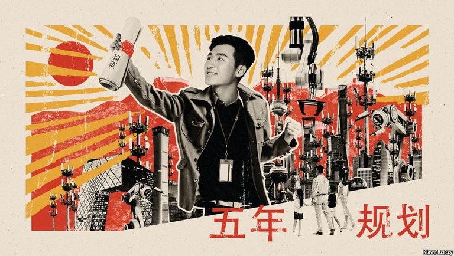

2021-03-17T10:14:19+00:00
Five-year plan
五年规划
五年規劃
The big target
大目标
大目標
Flush with confidence, China wants to insulate itself from the world
中国信心满满，打算与世界隔离
中國信心滿滿，打算與世界隔離
THE ANNUAL session of China’s legislature, the National People’s Congress, leaves nothing to chance. Speeches are thoroughly rehearsed, those attending are carefully vetted and even the tea service is immaculately choreographed. Yet there are always a few unscripted remarks—or, perhaps, remarks scripted to sound unscripted—that stick out. During the weeklong event, which ended on March 11th, the most memorable words came from Xi Jinping, the country’s leader. “China can now look the world in the eye,” he said in a small meeting on the sidelines. “It’s not like back in the day, when we were still bumpkins.” It was an unvarnished expression of Mr Xi’s belief that China has become a great power and now must act like one.
中国的立法机构全国人民代表大会每年举行的会议都组织得万无一失。发言经过周密排练，与会人员经过细致审查，连茶水服务也都精心安排。然而总归还是会爆出一些引人注目的脱稿发言——也可能是特意把稿子写得好像脱稿一样。今年，为期一周的人大会议在3月11日闭幕，期间最让人印象深刻的言辞来自国家领导人习近平。“中国已经可以平视这个世界了，”他在一场政协联组会议上说道，“也不像我们当年那么‘土’了。”习近平毫不掩饰地表达出一份信念——中国已成为强国，现在必须像强国那样行事。
中國的立法機構全國人民代表大會每年舉行的會議都組織得萬無一失。發言經過周密排練，與會人員經過細緻審查，連茶水服務也都精心安排。然而總歸還是會爆出一些引人注目的脫稿發言——也可能是特意把稿子寫得好像脫稿一樣。今年，為期一周的人大會議在3月11日閉幕，期間最讓人印象深刻的言辭來自國家領導人習近平。“中國已經可以平視這個世界了，”他在一場政協聯組會議上說道，“也不像我們當年那麼‘土’了。”習近平毫不掩飾地表達出一份信念——中國已成為強國，現在必須像強國那樣行事。
The main business of the congress was ratification of a new five-year plan that aims to make China even more powerful, while guarding it against global rivals. A legacy of the Soviet economic system, such plans remain important. They set targets that officials must fulfil. The new plan—the 14th, running from 2021 to 2025—confirms just how serious the leadership is about trying to insulate the country from the hostile foreign forces that it believes are arrayed against it.
这次人大会议的主要议题是审议批准新的五年规划，其目标是让中国变得更加强大，同时抵御全球竞争对手。这类规划承袭自苏联经济体制，在中国依然发挥重要功能。它们设定了官员们必须完成的目标。2021年至2025年的新五年规划（第14个，以下简称“十四五”）证实，中国领导层认为外国敌对势力在联合攻击中国，他们是动真格要让中国与之隔离。
這次人大會議的主要議題是審議批准新的五年規劃，其目標是讓中國變得更加強大，同時抵禦全球競爭對手。這類規劃承襲自蘇聯經濟體制，在中國依然發揮重要功能。它們設定了官員們必須完成的目標。2021年至2025年的新五年規劃（第14個，以下簡稱“十四五”）證實，中國領導層認為外國敵對勢力在聯合攻擊中國，他們是動真格要讓中國與之隔離。
The document does not mention America by name, but it does not need to: every official knows that competition with America looms large in China’s strategies. The previous five-year plan described how a peaceful multilateral world would benefit China. This one highlights the danger of “hegemonism”. Geopolitical uncertainties help explain what, to many observers, is its most striking element. That is its omission of one target that was a centrepiece of previous plans: average yearly growth. Instead, it states that growth targets will be set each year, depending on conditions. China is wary of committing itself when it does not know whether America will choke off its supply of high-end semiconductors, among other things. But the plan does pledge that China will be a “mid-tier developed country” by 2035.
该文件没有点名提到美国，但也并不需要，因为所有官员都知道与美国的竞争在中国战略规划中的重要性。上一个五年规划指出中国将得益于和平的多边世界。而“十四五”则强调“霸权主义”的危险。地缘政治的不确定性有助于解释在众多观察家看来这份规划中最异乎寻常的一个要素。作为以往规划中的核心内容，年均GDP增速的目标没有出现在“十四五”中。取而代之的是，“十四五”提出要根据实际情况每年设定增长目标。面对美国可能掐断高端半导体供应等未知数，中国对于承诺增长目标非常谨慎。但“十四五”还是明确承诺到2035年中国的人均GDP达到“中等发达国家”水平。
該文件沒有點名提到美國，但也並不需要，因為所有官員都知道與美國的競爭在中國戰略規劃中的重要性。上一個五年規劃指出中國將得益於和平的多邊世界。而“十四五”則強調“霸權主義”的危險。地緣政治的不確定性有助於解釋在眾多觀察家看來這份規劃中最異乎尋常的一個要素。作為以往規劃中的核心內容，年均GDP增速的目標沒有出現在“十四五”中。取而代之的是，“十四五”提出要根據實際情況每年設定增長目標。面對美國可能掐斷高端半導體供應等未知數，中國對於承諾增長目標非常謹慎。但“十四五”還是明確承諾到2035年中國的人均GDP達到“中等發達國家”水平。
It also sets out numerous other goals. These include an increase in spending on research and development of at least 7% annually over the next five years. The plan says 65% of the population should be urban by 2025, up from nearly 61% at the end of 2019. And it vows to reduce the amount of carbon dioxide emitted for each unit of GDP by 18% between 2021 and 2025. These targets, however, are slightly underwhelming. If China were to continue on its trajectory of the past five years, it would handily outperform them all.
“十四五”还设定了很多其他目标。其中包括未来五年全社会研发经费投入年均增长7%以上。规划还指出，到2025年，常住人口城镇化率应从2019年底的近61%上升至65%。它还誓言在2021年至2025年间把单位GDP二氧化碳排放降低18%。不过这些目标有些平平无奇。只要中国保持过去五年的前行轨道，这些目标都能轻松超越。
“十四五”還設定了很多其他目標。其中包括未來五年全社會研發經費投入年均增長7%以上。規劃還指出，到2025年，常住人口城鎮化率應從2019年底的近61%上升至65%。它還誓言在2021年至2025年間把單位GDP二氧化碳排放降低18%。不過這些目標有些平平無奇。只要中國保持過去五年的前行軌道，這些目標都能輕鬆超越。
More telling in this plan is the kind of growth it describes. It talks of a “dual-circulation strategy”, a mouthful of a concept unveiled by Mr Xi last year. This requires China to remain part of the “international circulation” of global trade—the plan says it must defend its share of export markets. But it emphasises the improvement of “domestic circulation”—ie, the building of a vibrant economy at home while reducing dependence on others.
更能说明问题的是规划中对发展模式的描述。“十四五”谈到了“双循环战略”。这是习近平去年提出的一个颇拗口的复杂概念。它要求中国保持参与全球贸易的“国际循环”——“十四五”表示中国必须捍卫出口市场份额。但它强调加快构建“国内大循环”，即建立充满活力的国内经济，减少对其他国家的依赖。
更能說明問題的是規劃中對發展模式的描述。“十四五”談到了“雙循環戰略”。這是習近平去年提出的一個頗拗口的複雜概念。它要求中國保持參與全球貿易的“國際循環”——“十四五”表示中國必須捍衛出口市場份額。但它強調加快構建“國內大循環”，即建立充滿活力的國內經濟，減少對其他國家的依賴。
Some aspects of this strategy are welcome. Officials say that it will require resources at home to be allocated according to market principles, not government diktats. They recognise the need to relax the hukou system, a household registry that makes it hard for rural citizens to settle in cities. The plan says hukou will be paired with a points-based arrangement that could make migration easier, especially for young, educated workers.
该战略的某些方面是受欢迎的。官员们表示，它将要求国内资源按市场规律而非政府指令分配。他们认识到有必要放宽户口制度，现行制度让农村人口难以落户城市。“十四五”提出户口将与积分落户制度挂钩，让人们移居落户变得更容易，特别是对受过教育的年轻劳动人口。
該戰略的某些方面是受歡迎的。官員們表示，它將要求國內資源按市場規律而非政府指令分配。他們認識到有必要放寬戶口制度，現行制度讓農村人口難以落戶城市。“十四五”提出戶口將與積分落戶制度掛鉤，讓人們移居落戶變得更容易，特別是對受過教育的年輕勞動人口。
Other aspects may worry the rest of the world. The plan does not mention the “Made in China 2025” programme that has been roundly criticised by American officials as an industrial policy on steroids. But the main elements of it remain. In setting out priorities for manufacturing, the plan urges investment in the very same sectors, from robotics to electric vehicles.
但有些方面可能令其他国家担心。“十四五”没有提及“中国制造2025”，该计划曾被美国官员斥为打了兴奋剂的产业政策。但它的主要元素仍然在。在确定制造业的优先项目时，“十四五”敦促向从机器人到电动汽车的领域投资，与“中国制造2025”完全一致。
但有些方面可能令其他國家擔心。“十四五”沒有提及“中國製造2025”，該計劃曾被美國官員斥為打了興奮劑的產業政策。但它的主要元素仍然在。在確定製造業的優先項目時，“十四五”敦促向從機器人到電動汽車的領域投資，與“中國製造2025”完全一致。
It also identifies seven frontier technologies that are deemed vital to development and national security. These include quantum computing, semiconductors and artificial intelligence. China is already spending vast sums on these technologies, but results have been patchy. Its years-long drive to catch up with world leaders in the making of semiconductors has so far fallen well short of the government’s ambitions.
规划还列出了七项被认为对发展和国家安全至关重要的前沿技术。其中包括量子计算、半导体和人工智能。中国已经在这些技术上投入巨资，但成果良莠不齐。多年来中国努力要在半导体制造方面追赶世界领先水平，至今远未达到政府的期望。
規劃還列出了七項被認為對發展和國家安全至關重要的前沿技術。其中包括量子計算、半導體和人工智能。中國已經在這些技術上投入巨資，但成果良莠不齊。多年來中國努力要在半導體製造方面追趕世界領先水平，至今遠未達到政府的期望。
China wants to prop up less cutting-edge production, too. The country is the world’s biggest maker of goods. Its share of global manufacturing is nearly 30%—about the same as the combined shares of America, Japan and Germany. Many foreign firms wonder whether to move some operations away from China, because of climbing costs and political risks arising from tensions with America. The plan calls for China to keep critical parts of supply chains in the country. To foreign executives, that may sound threatening.
中国也希望支撑非尖端制造。中国是全球最大的商品制造国。它占全球制造业的份额接近30%，大约相当于美国、日本和德国的份额总和。由于成本攀升以及中美关系紧张令政治风险加大，许多外国公司都在考虑是否该将部分工厂移出中国。“十四五”提出要把供应链的关键部分留在中国。在外国高管听来这可能带有威胁意味。
中國也希望支撐非尖端製造。中國是全球最大的商品製造國。它佔全球製造業的份額接近30%，大約相當於美國、日本和德國的份額總和。由於成本攀升以及中美關係緊張令政治風險加大，許多外國公司都在考慮是否該將部分工廠移出中國。“十四五”提出要把供應鏈的關鍵部分留在中國。在外國高管聽來這可能帶有威脅意味。
More positively, one way that China hopes to maintain its industrial advantage is with its tried-and-tested approach of building top-notch infrastructure. The transport ministry has plans to nearly double the length of China’s high-speed rail network to 70,000km within 15 years. That would make it almost five times as long as all other high-speed rail networks in the world combined.
而较为正面的是，中国希望保持产业优势的一个做法是建设一流的基础设施，这是它的一条屡试不爽的策略。交通部计划在15年内把中国的高速铁路网里程增加近一倍，达到七万公里。这几乎将是全球其余高铁里程总和的五倍。
而較為正面的是，中國希望保持產業優勢的一個做法是建設一流的基礎設施，這是它的一條屢試不爽的策略。交通部計劃在15年內把中國的高速鐵路網裡程增加近一倍，達到七萬公里。這幾乎將是全球其餘高鐵里程總和的五倍。
The five-year plan hints there may be economic difficulties ahead. It commits to stabilising or reducing the ratio of China’s debt to GDP—implying that it is getting too high (nearly 300% of GDP). But cutting debt will be tricky when pouring cash into infrastructure and sponsoring high-tech.
“十四五”暗示前方可能遭遇经济困境。它承诺稳定或降低中国的债务占GDP比重，意味着当前占比过高（接近GDP的300%）。但是，要在大举投资基建和发展高科技的同时削减债务是有难度的。
“十四五”暗示前方可能遭遇經濟困境。它承諾穩定或降低中國的債務佔GDP比重，意味着當前佔比過高（接近GDP的300%）。但是，要在大舉投資基建和發展高科技的同時削減債務是有難度的。
The environment is another thorny issue. China has vowed that its carbon emissions will peak by 2030, and the country will be carbon neutral by 2060. The plan, however, gives little indication of how to get there, except for boosting nuclear-power generation from 52 gigawatts today to 70 gigawatts by 2025. It vows to promote the “clean use of coal”, but does not promise to phase it out. More details may emerge in the coming months as ministries draw up their own targets.
环境是另一个棘手的问题。中国之前已经承诺国内碳排放将在2030年达到峰值，到2060年实现碳中和。然而，除了把核电发电量从目前的52GW提高到2025年的70GW之外，“十四五”几乎没有说明将如何实现上述目标。规划誓言促进“煤炭的清洁利用”，但并没有承诺逐步淘汰煤炭。随着各部委制订各自的目标，更多细节可能在未来数月浮现。
環境是另一個棘手的問題。中國之前已經承諾國內碳排放將在2030年達到峰值，到2060年實現碳中和。然而，除了把核電發電量從目前的52GW提高到2025年的70GW之外，“十四五”幾乎沒有說明將如何實現上述目標。規劃誓言促進“煤炭的清潔利用”，但並沒有承諾逐步淘汰煤炭。隨着各部委制訂各自的目標，更多細節可能在未來數月浮現。
State media hail five-year plans as evidence that China has far-sighted leaders, who bravely chart new paths for the future. But the documents really summarise where the country is already heading. The pursuit of self-sufficiency is well under way, however costly it may prove. ■
中国官方媒体盛赞五年规划体现了中国领导人的远见卓识，他们勇于为未来开拓新道路。但这些计划实际上无非是在总结中国现在的前进方向。追求自给自足的行动早已展开，无论最终代价可能多大。
中國官方媒體盛讚五年規劃體現了中國領導人的遠見卓識，他們勇於為未來開拓新道路。但這些計劃實際上無非是在總結中國現在的前進方向。追求自給自足的行動早已展開，無論最終代價可能多大。